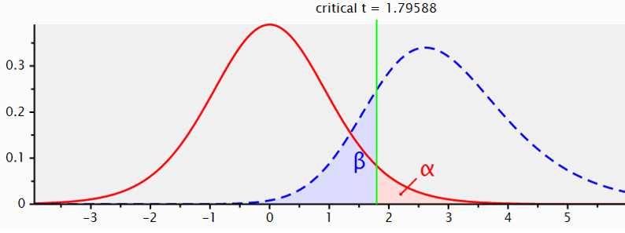
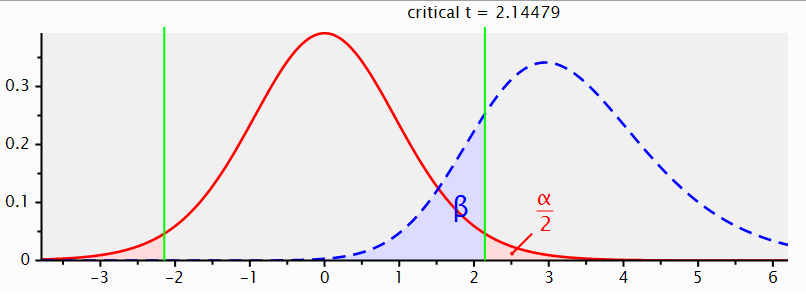
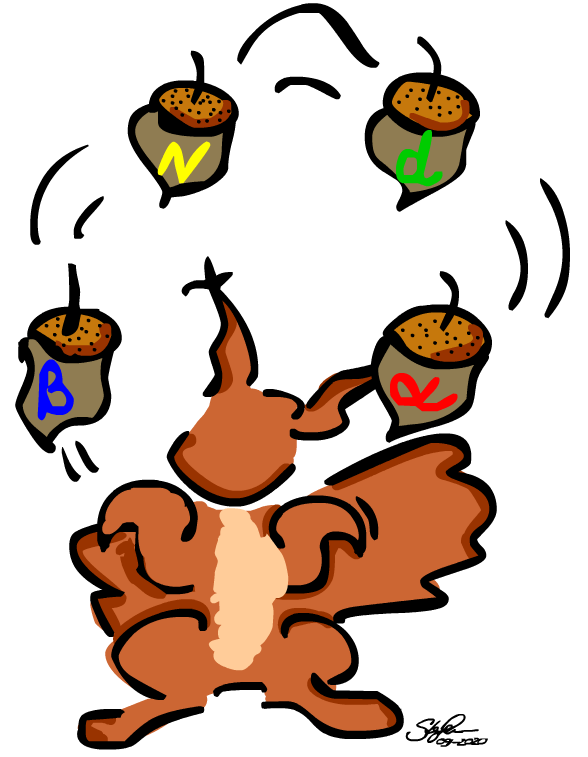
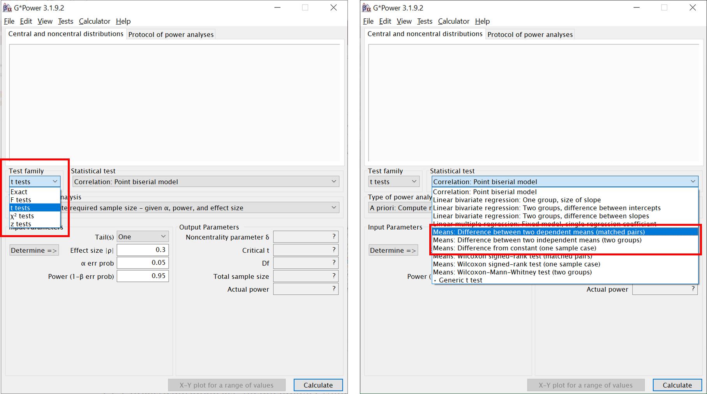
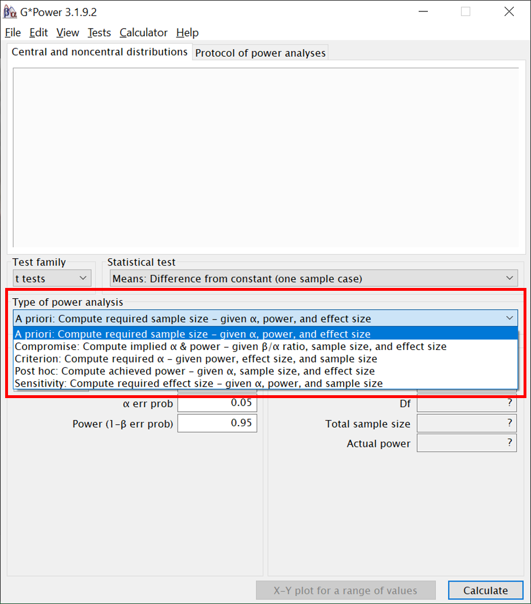
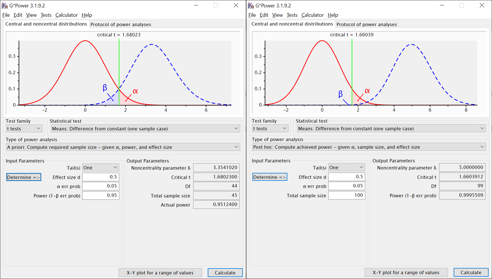
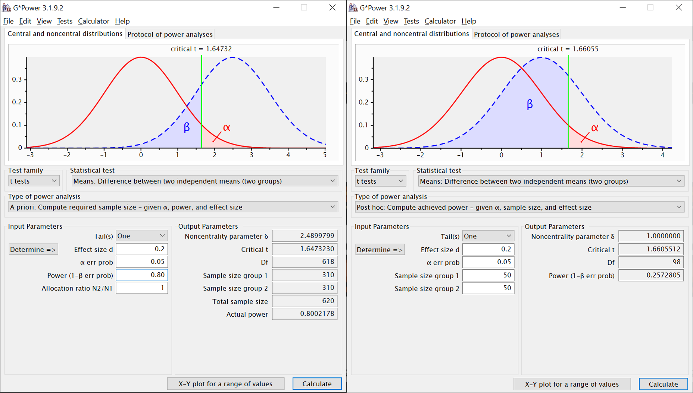
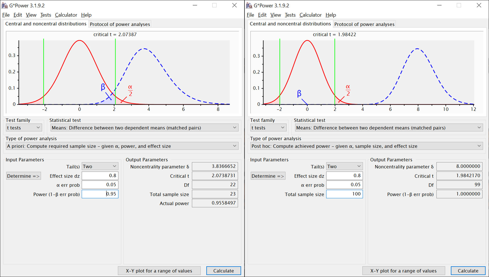

Wir haben in dieser Woche gelernt, dass jeder statistische Test vier wichtige kennzeichnende Komponenten (sog. Determinanten) hat:
Das akzeptierte Alpha-Fehlerniveau (aus Konvention normalerweise 0.05). Wir haben gesehen, dass sich über Testverteilungen die Wahrscheinlichkeit bestimmter Ergebnisse (oder noch extremerer Ergebnisse) unter Annahme einer Nullhypothese ermitteln lässt. Sind empirisch beobachtete Ergebnisse unter Annahme der H0 hinreichend unwahrscheinlich, entscheiden wir uns, die H0 zugunsten einer Alternativhypothese (H1) zu verwerfen. Aber was ist “hinreichend unwahrscheinlich”? Was immer wir hier als Kriterium verwenden, ist unser akzeptiertes Alpha-Fehlerniveau. Wenn es bei “<0.05” liegt bedeutet das: wir weisen eine Nullhypothese dann zurück, wenn unsere beobachteten Ergebnisse unter Annahme der H0 weniger als 5% wahrscheinlich sind. Auf lange Sicht werden wir die H0 dann nur in höchstens 5% aller Fälle fälschlicherweise zurückweisen, also einen sogenannten Alpha-Fehler (auch genannt: Fehler 1. Art) begehen. In einem Einzelfall können wir natürlich niemals sicher sein, ob wir ihn begangen haben oder nicht.
Das akzeptierte beta-Fehlerniveau oder die Teststärke (1-beta). Der beta-Fehler bezieht sich auf die zweite Art und Weise, auf die wir uns bei einem statistischen Test irren können. Wir können die Nullhypothese natürlich nicht nur fälschlicherweise ablehnen (alpha-Fehler), sondern auch fälschlicherweise beibehalten. Hier würden wir also annehmen, dass es keinen Effekt einer bestimmten Manipulation gäbe, obwohl in Wahrheit eine Alternativhypothese zutrifft und die Manipulation, Behandlung o.ä. doch einen Effekt hat. Auch das wäre ärgerlich, weil uns dadurch möglicherweise bedeutsame Erkenntnisse entgehen könnten (denken Sie beispielsweise an Medikamentenforschung, Forschung zur Wirksamkeit von Psychotherapien oder die aktuellen Impfstudien). Wie groß der beta-Fehler sein darf, ist weniger stark festgelegt, aber eine häufige Faustregel ist, dass er nicht größer als 20% sein sollte. Statt der beta-Fehlerwahrscheinlichkeit wird häufig 1-beta, die sogenannte Teststärke angegeben. Die Teststärke ist also die Wahrscheinlichkeit, eine Alternativhypothese anzunehmen, wenn sie zutrifft. Nach der eben erwähnten Konvention sollte diese Wahrscheinlichkeit also mindestens 80% betragen.
Die Effektgröße, entweder vermutet (vor dem Erheben und Testen) oder beobachtet (nach dem Erheben und Testen). Diese Angabe bezieht sich darauf, wie groß oder klein der Einfluss einer Manipulation, Behandlung oder ähnlichem auf die abhängige Variable ist, also wie groß oder klein beispielsweise ein Mittelwertsunterschied, ein Zusammenhang, eine Veränderung oder eine Abweichung von einem bekannten Mittelwert ist (relativiert an einem Streuungsmaß). Als Maß für Effektstärken kennen wir hier bisher Cohen’s d, es gibt aber noch eine ganze Reihe von anderen Effektgrößen, die wir auch teilweise noch kennenlernen werden.
Die Stichprobengröße, entweder die benötigte (vor Erhebung und Test) oder die für eine Studie gewonnen werden konnte (nach Erhebung).
Wenn wir jede dieser Komponenten ohne praktische Beschränkungen optimieren könnten, hätten wir in jedem Test am liebsten:
Ein Alpha-Fehler-Niveau nahe Null (für ein auf lange Sicht minimales Risiko, eine H0 fälschlicherweise abzulehnen)
Ein Beta-Fehler-Niveau nahe Null bzw. eine Teststärke nahe 1 (für ein auf lange Sicht minimales Risiko, einen wahren Effekt zu verpassen)
Jede mögliche Effektstärke würden wir gern maximal präzise schätzen können, auch sehr kleine Effekte würden wir gern zuverlässig in unseren Studien detektieren können
Möglichst kleine Stichproben, um Aufwand, Dauer und Kosten für unsere Studien gering zu halten
Wie Sie vermutlich bereits geahnt haben, leben wir aber nicht in dieser idealen Welt - in Wahrheit sind die vier Determinanten des statistischen Testens voneinander abhängig. Jede Optimierung einer der Dimensionen wird durch eine Verschlechterung auf den anderen Dimensionen erkauft. Da Alpha aus Konvention selten geändert wird (obwohl es je nach Kontext einer Studie durchaus sinnvoll sein kann, darüber nachzudenken), stehen praktisch meistens folgende Zusammenhänge im Vordergrund (eigentlich ist es ein und derselbe Zusammenhang, aber aus drei Blickwinkeln betrachtet):
Je mehr Versuchspersonen wir in einer Studie haben, desto höher wird die Wahrscheinlichkeit, einen bestimmten wahren Effekt (von zb. d = 0.5) in der Studie zu detektieren (desto höher also die Teststärke für diesen Effekt). Zudem wird derselbe Effekt mit einer höheren Präzision geschätzt, je größer die Stichprobe ist (wenn man sehr viele Studien mit großen Stichproben durchführen würde, sollte der in jeder einzelnen Studie gefundene Effekt also nicht mehr weit vom wahren Effekt abweichen).
Je kleiner ein Effekt in der Population, desto mehr Versuchspersonen werden benötigt, um ihn in einer Studie mit einer bestimmten Teststärke (auch: Power), beispielsweise 80%, detektieren zu können.
Je höher unser angestrebtes Powerlevel (zb 90% oder sogar 95% statt 80%) für einen bestimmten Effekt (zb d = 0.2), desto mehr Versuchspersonen werden wir benötigen, um dieses Powerlevel in einer Studie zu realiseren.
Betrachten Sie folgende Illustration aus G-Power:

Die rote Kurve ist die t-Verteilung für eine H0. sie gibt die Wahrscheinlichkeit aller Bereiche von t-Werten unter der Annahme an, dass es in Wahrheit keine systematischen Einflüsse in den Daten gibt (z.B.: keinen Unterschied zwischen zwei Gruppen in einem Experiment oder keine Veränderung zwischen zwei Messzeitpunkten). Wenn die H0 wahr ist, sind t-Werte von 0 am wahrscheinlichsten.
Die blaue Kurve ist die t-Verteilung für eine spezifische H1. Sie gibt die Wahrscheinlichkeit aller Bereiche von t-Werten unter der Annahme an, dass es einen systematischen Einfluss in den Daten von einer bestimmten Größe gibt. In diesem Fall wurde die H1 für einen Effekt von d = 0.8 dargestellt. Wenn diese spezifische H1 wahr ist, sind t-Werte von ca. 2.8 am wahrscheinlichsten.
Sie sehen aber auch, dass beide Verteilungen sich überlappen.
Wenn wir uns für ein Alpha-Level von 0.05 und einen einseitigen Test entschieden haben, orientieren wir uns nun ausschließlich an der roten Kurve der H0 (siehe Erklärung der Bedeutung von alpha) und suchen denjenigen t-Wert, der die H0 folgendermaßen in zwei Teile teilt: der Bereich rechts von diesem Wert soll zusammengenommen eine Wahrscheinlichkeit von 5% haben und der Wert links davon soll zusammengenommen eine Wahrscheinlichkeit von 95% haben. Diesen Wert könnten wir uns in Excel (über die t.inv-Funktion) ausgeben lassen, G-Power berechnet ihn aber auch automatisch für uns. Es handelt sich um den durch die grüne Linie gekennzeichneten Wert, also 1.79588.
Wir haben uns also entschieden: Wenn unser Experiment einen t-Wert hervorbringt, der kleiner als 1.79588 ist, werden wir uns für die Beibehaltung der H0 entscheiden. Wenn unser Experiment einen t-Wert von größer oder gleich 1.79588 hervorbringt, werden wir uns entscheiden, die H0 zu verwerfen.
Wir sehen nun, dass das Festlegen dieses kritischen Wertes (der durch unser gewünschtes Alpha determiniert wird) auch etwas mit der blaue Kurve der H1 macht. Ein nicht gerade kleiner Teil der Fläche der H1-Verteilung (genaugenommen 20%) liegt links vom kritischen t-Wert. Wenn wir empirische t-Werte tn diesem Bereich erhalten, entscheiden wir uns immer für das Beibehalten der H0. Die Wahrscheinlichkeit, diese Werte unter Annahme der H1 zu erhalten, ist aber auch nicht gering (nämlich - genau - 20%).
Wenn wir auf diese Weise vorgehen, haben wir auf lange Sicht also eine Wahrscheinlichkeit von 20% für einen beta-Fehler (die H0 beizubehalten, obwohl in Wahrheit die H1 gilt). Im Bereich rechts vom kritischen t-Wert liegen durch unsere Setzung des Alpha-Fehlerniveaus per Definition nur noch 5% der Werte der Verteilung für die H0. Außerdem liegen dort 80% der Werte für die Verteilung der H1. Wenn die H1 in Wirklichkeit gilt und wir den kritischen t-Wert so lassen wie er ist, werden wir also auf lange Sicht in 80% der Fälle korrekterweise die H0 verwerfen und die H1 akzeptieren. Das ist die Teststärke oder Power unseres Tests.
Sie sehen also bereits, dass das Setzen des kritischen t-Werts (der sich durch Alpha definiert) unter sonst gleichen Bedingungen die Teststärke festlegt. Würden wir beim alpha weniger streng sein (z.B. 0.10 festlegen statt 0.05), würde beta kleiner. Wenn wir bei Alpha noch strenger werden (zb 0.01 festlegen statt 0.05), würde beta größer.
Wir könnten aber auch an weiteren Schrauben drehen:
Wenn die (erwartete oder gefundene) Effektgröße kleiner wird, rückt die blaue Verteilung der H1 näher zur roten Verteilung der H0 (die ja die Abwesenheit eines Effekts repräsentiert). Die Überlappung der beiden Verteilungen erhöht sich. Unter sonst gleichen Bedingungen wird der beta-Bereich also größer, und somit die Teststärke kleiner. Wenn der Effekt größer wird und die H1 sich somit weiter von der H0 wegbewegt, passiert das Gegenteil.
Wenn wir die Stichprobengröße erhöhen, werden beide Verteilungen schmaler (ihre Hochpunkte bleiben aber am gleichen Ort). Dadurch verkleinert sich der Bereich, in dem sie sich überlappen und unter sonst gleichen Bedingungen erhöht sich die Teststärke.
Bei zweiseitiger Testung ändert sich an diesen Prinzipien übrigens nichts. Wir würden hier nur erlauben, dass die blaue Verteilung der H1 sowohl links als auch rechts von der roten Verteilung der H0 liegen kann. In dem unten sichtbaren Beispiel vermuten wir, dass es einen Effekt von 0.8 gibt, aber legen uns nicht darauf fest, in welche Richtung sich (beispielsweise) unsere Experimentalgruppen unterscheiden. Die Abbildung zeigt aus Platzgründen nur die “rechte” H1, aber strenggenommen müsste man die Abbildung am t-Wert von 0 spiegeln und dasselbe auf der linken Seite darstellen.
Wenn wir unser Alpha-Niveau insgesamt trotzdem auf 5% begrenzen wollen, müssen wir es also auf die beiden Seiten der H0 aufteilen. Auf jeder Seite der H0 wird der kritische t-Wert nun so bestimmt, dass er 2.5% der Werte abtrennt. Auf jeder einzelnen Seite wird alpha somit “strenger”. Unter sonst gleichen Bedingungen verringert sich also die Teststärke, wenn man zwei- statt einseitig testet.


G-Power ist ein Programm, mit dem sich für viele übliche Testverfahren berechnen lässt, welcher Wert sich für die eine beliebige der genannten Komponenten ergibt, wenn man die Werte der drei anderen festlegt. (Die Formel, mit der man dasselbe per Hand berechnen könnte, ist im Anhang der Vorlesung 7 zu finden. Dank G-Power können wir uns das manuelle Berechnen aber sparen.)
Wenn Sie G-Power öffnen, müssen Sie zunächst die Testfamilie auswählen (diese richtet sich nach der verwendeten Teststatistik), beispielsweise die Familie der t-Tests. Anschließend wird der konkrete gewünschte Test ausgewählt. Die im rechten Screenshot rot umrandeten Optionen entsprechen den drei t-Tests, die wir bisher behandelt haben. Welche Option zu welchem der t-Tests gehört, dürfte sich Ihnen mittlerweile aus der Bezeichnung erschließen.

Ist der gewünschte Test gewählt, gibt es stets fünf mögliche Arten, auf die die Test-Determinanten miteinander verrechnet werden können:

A priori: Die benötigte Stichprobengröße vor der Durchführung einer Studie aus den anderen Komponenten berechnen.
Compromise: Werte für alpha und beta aus den anderen Komponenten berechnen, unter Angabe eines gewünschten Verhältnisses zwischen den beiden Fehlerarten (zb: beta soll viermal so groß wie alpha sein, aber die konkreten Werte sind nachrangig).
Criterion: Erreichbares Alpha-Niveau aus den anderen Komponenten berechnen.
Post hoc: Die erreichte Teststärke nach Durchführung einer Studie berechnen.
Sensitivity: Berechnen, wie groß ein Effekt mindestens sein müsste, damit man ihn bei vorgegebener Stichprobengröße mit bestimmter Power (und alpa-Niveau) finden kann.
Wir werden uns in diesem Semester fast nur mit “a priori”" und “post hoc” beschäftigen.
Bitte beachten: Bei GPower müssen Dezimalstellen nicht mit Kommata, sondern mit Punkten abgetrennt werden!
Jede der drei Varianten des t-Tests, die wir bisher kennengelernt haben, braucht leicht anderen Input.
Option bei “Statistical Test”: “Means: Difference from constant (one sample case)”
A priori:
Input:
“Calculate” klicken (unten rechts)
Output:
Post hoc:
Input:
“Calculate” klicken (unten rechts)
Output:

Beispiel: Planung für einseitigen Test und mittleren Effekt (links). Stichprobe war offenbar größer als erwartet (rechts), Effekt wie vermutet, Power in Test demnach höher als zur Planung verwendet.
Option bei “Statistical Test”: “Means: Difference between two independent means (two groups)”
A priori:
Input:
“Calculate” klicken (unten rechts)
Output:
Post hoc:
Input:
“Calculate” klicken (unten rechts)
Output:

Beispiel: Planung für einseitigen Test und kleinen Effekt (links). Stichprobe war offenbar kleiner als erwartet (rechts), Effekt wie vermutet, Power in Test demnach niedriger als zur Planung verwendet.
Option bei “Statistical Test”: “Means: Difference between two dependent means (matched pairs)”
A priori:
Input:
“Calculate” klicken (unten rechts)
Output:
Post hoc:
Input:
“Calculate” klicken (unten rechts)
Output:

Beispiel: Planung für zweiseitigen Test und großen Effekt (links). Stichprobe war offenbar größer als erwartet (rechts), Effekt wie vermutet, Power in Test demnach höher als zur Planung verwendet.
Nehmen Sie an, die H0 wäre in Bezug auf einen bestimmten interessierenden Unterschied in der Population wahr, zum Beispiel: Der IQ von Menschen mit Brille unterscheidet sich im Mittel nicht vom IQ von Menschen ohne Brille. Eine Forscherin weiß das nicht und führt genau 100 identische Experimente durch, in denen sie den mittleren IQ einer Gruppe von Menschen ohne Brille mit dem IQ einer Gruppe von Menschen mit Brille vergleicht. Wenn die Forscherin die in der Statistik üblichen Spezifikationen für ihre Tests verwendet, in wie vielen ihrer Experimente wird sie dann dennoch einen statistisch signifikanten Unterschied zwischen den Gruppen feststellen?
Nehmen Sie an, es ist noch nicht bekannt, ob sich die Lebenszufriedenheit von Menschen mit Brille vom der von Menschen ohne Brille unterscheidet. Sie lesen von zwei verschiedenen Studien, die diese Frage untersucht haben. Studie 1 fand keinen signifikanten Unterschied zwischen beiden Gruppen. Ihre a priori Teststärke für den kleinsten interessierenden Effekt betrug 0.55. Wie sehr glauben Sie, dass es tatsächlich keinen Unterschied auf Ebene der Population gibt? Die zweite Studie findet ebenfalls keinen signifikanten Unterschied, ihre a priori Teststärke für den kleinsten interessierenden Effekt betrug 0.95. Wie sehr glauben Sie auf Basis der zweiten Studie, dass es in Wahrheit keinen Unterschied gibt? Wenn sie die beiden Studien für unterschiedlich aussagekräftig halten, warum?
Sie planen eine Studie und errechnen mit G-Power, dass Sie für die erwartete Effektgröße bei einem einseitigen t-Test und einer angestrebten Teststärke von 90% eine Stichprobe von 350 Personen benötigen. Sie denken noch einmal über Ihre Hypothese nach kommen zu dem Schluss, dass der Effekt auch genau andersherum auftreten könnte als sie zunächst vermutet haben. Sie müssen also zweiseitig testen. Alpha, die vermutete Effektgröße und die Teststärke von 90% möchten Sie beibehalten. Welche Komponente wird sich dann durch den Wechsel zur zweiseitgen Testung verändern müssen und in welche Richtung?
Copyright © 2020 Simon Stephan. All rights reserved.